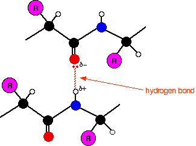
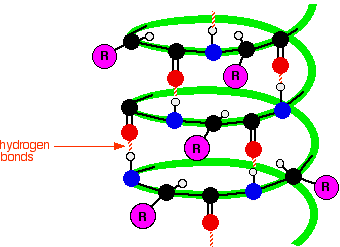
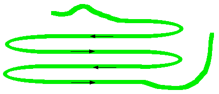
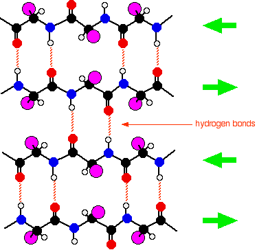
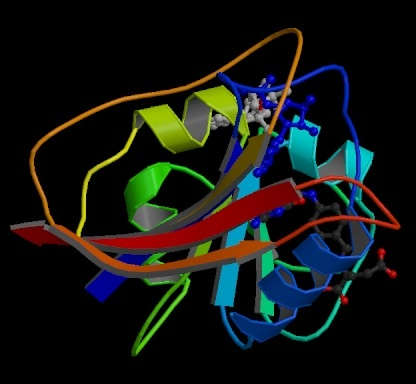
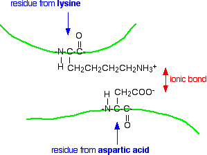
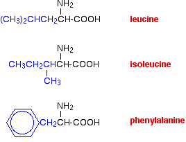

|
THE STRUCTURE OF PROTEINS This page explains how amino acids combine to make proteins and what is meant by the primary, secondary and tertiary structures of proteins. Quaternary structure isn't covered. It only applies to proteins consisting of more than one polypeptide chain. There is a mention of quaternary structure on the IB chemistry syllabus, but on no other UK-based syllabus at this level. | ||
|
Note: Quaternary structure can be very complicated, and I don't know exactly what depth the IB syllabus wants for this (which is why I haven't included it). I suspect what is wanted is fairly trivial. IB students should ask the advice of their teacher or lecturer. | ||
|
The primary structure of proteins Drawing the amino acids In chemistry, if you were to draw the structure of a general 2-amino acid, you would probably draw it like this:
However, for drawing the structures of proteins, we usually twist it so that the "R" group sticks out at the side. It is much easier to see what is happening if you do that.
That means that the two simplest amino acids, glycine and alanine, would be shown as:
Peptides and polypeptides Glycine and alanine can combine together with the elimination of a molecule of water to produce a dipeptide. It is possible for this to happen in one of two different ways - so you might get two different dipeptides. Either:
Or:
In each case, the linkage shown in blue in the structure of the dipeptide is known as a peptide link. In chemistry, this would also be known as an amide link, but since we are now in the realms of biochemistry and biology, we'll use their terms. If you joined three amino acids together, you would get a tripeptide. If you joined lots and lots together (as in a protein chain), you get a polypeptide. A protein chain will have somewhere in the range of 50 to 2000 amino acid residues. You have to use this term because strictly speaking a peptide chain isn't made up of amino acids. When the amino acids combine together, a water molecule is lost. The peptide chain is made up from what is left after the water is lost - in other words, is made up of amino acid residues. By convention, when you are drawing peptide chains, the -NH2 group which hasn't been converted into a peptide link is written at the left-hand end. The unchanged -COOH group is written at the right-hand end. The end of the peptide chain with the -NH2 group is known as the N-terminal, and the end with the -COOH group is the C-terminal. A protein chain (with the N-terminal on the left) will therefore look like this:
The "R" groups come from the 20 amino acids which occur in proteins. The peptide chain is known as the backbone, and the "R" groups are known as side chains. | ||
|
Note: In the case where the "R" group comes from the amino acid proline, the pattern is broken. In this case, the hydrogen on the nitrogen nearest the "R" group is missing, and the "R" group loops around and is attached to that nitrogen as well as to the carbon atom in the chain. I mention this for the sake of completeness - not because you would be expected to know about it in chemistry at this introductory level. | ||
|
The primary structure of proteins Now there's a problem! The term "primary structure" is used in two different ways. At its simplest, the term is used to describe the order of the amino acids joined together to make the protein. In other words, if you replaced the "R" groups in the last diagram by real groups you would have the primary structure of a particular protein. This primary structure is usually shown using abbreviations for the amino acid residues. These abbreviations commonly consist of three letters or one letter. Using three letter abbreviations, a bit of a protein chain might be represented by, for example:
If you look carefully, you will spot the abbreviations for glycine (Gly) and alanine (Ala) amongst the others. If you followed the protein chain all the way to its left-hand end, you would find an amino acid residue with an unattached -NH2 group. The N-terminal is always written on the left of a diagram for a protein's primary structure - whether you draw it in full or use these abbreviations. The wider definition of primary structure includes all the features of a protein which are a result of covalent bonds. Obviously, all the peptide links are made of covalent bonds, so that isn't a problem. But there is an additional feature in proteins which is also covalently bound. It involves the amino acid cysteine.
If two cysteine side chains end up next to each other because of folding in the peptide chain, they can react to form a sulphur bridge. This is another covalent link and so some people count it as a part of the primary structure of the protein.
Because of the way sulphur bridges affect the way the protein folds, other people count this as a part of the tertiary structure (see below). This is obviously a potential source of confusion! | ||
|
Important: You need to know where your particular examiners are going to include sulphur bridges - as a part of the primary structure or as a part of the tertiary structure. You need to check your current syllabus and past papers. If you are studying a UK-based syllabus and haven't got these, follow this link to find out how to get hold of them. | ||
|
The secondary structure of proteins Within the long protein chains there are regions in which the chains are organised into regular structures known as alpha-helices (alpha-helixes) and beta-pleated sheets. These are the secondary structures in proteins. These secondary structures are held together by hydrogen bonds. These form as shown in the diagram between one of the lone pairs on an oxygen atom and the hydrogen attached to a nitrogen atom:  Although the hydrogen bonds are always between C=O and H-N groups, the exact pattern of them is different in an alpha-helix and a beta-pleated sheet. When you get to them below, take some time to make sure you see how the two different arrangements works. | ||
|
Important: If you aren't happy about hydrogen bonding and are unsure about what this diagram means, follow this link before you go on. What follows is difficult enough to visualise anyway without having to worry about what hydrogen bonds are as well! You must also find out exactly how much detail you need to know about this next bit. It may well be that all you need is to have heard of an alpha-helix and know that it is held together by hydrogen bonds between the C=O and N-H groups. Once again, you need to check your syllabus and past papers - particularly mark schemes for the past papers. If you follow either of these links, use the BACK button on your browser to return to this page. | ||
|
The alpha-helix In an alpha-helix, the protein chain is coiled like a loosely-coiled spring. The "alpha" means that if you look down the length of the spring, the coiling is happening in a clockwise direction as it goes away from you. | ||
|
Note: If your visual imagination is as hopeless as mine, the only way to really understand this is to get a bit of wire and coil it into a spring shape. A bit of computer lead would do. In truth, if you are a chemistry student, you are very unlikely to need to know this. If protein secondary structure is on your syllabus, your examiners are most likely only to want you to know how the structures are held together by hydrogen bonding. Check past papers to be sure. If you are reading this as a biochemistry or biology student, and have been given some other way of recognising an alpha-helix, stick to whatever method you have been given. | ||
|
The next diagram shows how the alpha-helix is held together by hydrogen bonds. This is a very simplified diagram, missing out lots of atoms. We'll talk it through in some detail after you have had a look at it.  What's wrong with the diagram? Two things: First of all, only the atoms on the parts of the coils facing you are shown. If you try to show all the atoms, the whole thing gets so complicated that it is virtually impossible to understand what is going on. Secondly, I have made no attempt whatsoever to get the bond angles right. I have deliberately drawn all of the bonds in the backbone of the chain as if they lie along the spiral. In truth they stick out all over the place. Again, if you draw it properly it is virtually impossible to see the spiral. So, what do you need to notice? Notice that all the "R" groups are sticking out sideways from the main helix. Notice the regular arrangement of the hydrogen bonds. All the N-H groups are pointing upwards, and all the C=O groups pointing downwards. Each of them is involved in a hydrogen bond. And finally, although you can't see it from this incomplete diagram, each complete turn of the spiral has 3.6 (approximately) amino acid residues in it. If you had a whole number of amino acid residues per turn, each group would have an identical group underneath it on the turn below. Hydrogen bonding can't happen under those circumstances. Each turn has 3 complete amino acid residues and two atoms from the next one. That means that each turn is offset from the ones above and below, such that the N-H and C=O groups are brought into line with each other. Beta-pleated sheets In a beta-pleated sheet, the chains are folded so that they lie alongside each other. The next diagram shows what is known as an "anti-parallel" sheet. All that means is that next-door chains are heading in opposite directions. Given the way this particular folding happens, that would seem to be inevitable.  It isn't, in fact, inevitable! It is possible to have some much more complicated folding so that next-door chains are actually heading in the same direction. We are getting well beyond the demands of UK A level chemistry (and its equivalents) now. The folded chains are again held together by hydrogen bonds involving exactly the same groups as in the alpha-helix.  | ||
|
Note: Note that there is no reason why these sheets have to be made from four bits of folded chain alongside each other as shown in this diagram. That was an arbitrary choice which produced a diagram which fitted nicely on the screen! | ||
|
The tertiary structure of proteins What is tertiary structure? The tertiary structure of a protein is a description of the way the whole chain (including the secondary structures) folds itself into its final 3-dimensional shape. This is often simplified into models like the following one for the enzyme dihydrofolate reductase. Enzymes are, of course, based on proteins.  | ||
|
Note: This diagram was obtained from the RCSB Protein Data Bank. If you want to find more information about dihydrofolate reductase, their reference number for it is 7DFR. There is nothing particularly special about this enzyme in terms of structure. I chose it because it contained only a single protein chain and had examples of both types of secondary structure in it. | ||
|
The model shows the alpha-helices in the secondary structure as coils of "ribbon". The beta-pleated sheets are shown as flat bits of ribbon ending in an arrow head. The bits of the protein chain which are just random coils and loops are shown as bits of "string". The colour coding in the model helps you to track your way around the structure - going through the spectrum from dark blue to end up at red. You will also notice that this particular model has two other molecules locked into it (shown as ordinary molecular models). These are the two molecules whose reaction this enzyme catalyses. What holds a protein into its tertiary structure? The tertiary structure of a protein is held together by interactions between the the side chains - the "R" groups. There are several ways this can happen. Ionic interactions Some amino acids (such as aspartic acid and glutamic acid) contain an extra -COOH group. Some amino acids (such as lysine) contain an extra -NH2 group. You can get a transfer of a hydrogen ion from the -COOH to the -NH2 group to form zwitterions just as in simple amino acids. You could obviously get an ionic bond between the negative and the positive group if the chains folded in such a way that they were close to each other.  Hydrogen bonds Notice that we are now talking about hydrogen bonds between side groups - not between groups actually in the backbone of the chain. Lots of amino acids contain groups in the side chains which have a hydrogen atom attached to either an oxygen or a nitrogen atom. This is a classic situation where hydrogen bonding can occur. For example, the amino acid serine contains an -OH group in the side chain. You could have a hydrogen bond set up between two serine residues in different parts of a folded chain.
You could easily imagine similar hydrogen bonding involving -OH groups, or -COOH groups, or -CONH2 groups, or -NH2 groups in various combinations - although you would have to be careful to remember that a -COOH group and an -NH2 group would form a zwitterion and produce stronger ionic bonding instead of hydrogen bonds. van der Waals dispersion forces Several amino acids have quite large hydrocarbon groups in their side chains. A few examples are shown below. Temporary fluctuating dipoles in one of these groups could induce opposite dipoles in another group on a nearby folded chain. The dispersion forces set up would be enough to hold the folded structure together.  | ||
|
Important: If you aren't happy about van der Waals dispersion forces you should follow this link. Use the BACK button on your browser to return to this page. | ||
|
Sulphur bridges Sulphur bridges which form between two cysteine residues have already been discussed under primary structures. Wherever you choose to place them doesn't affect how they are formed!
© Jim Clark 2004 (last modified November 2016) |
||